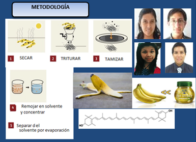

Sobre Mi Persona

Links


Proyecto: Obtención de Luteína
Introducción:
El Platano es un fruto muy consumido en nuestro país y produce mucha cascara que se desecha y es usada como abono pero puede obtenerse mas utilidades siendo parte de una dinamica medioambiental. La materia prima nos rodea, solo que tenemos que buscar el metodo para transformala.
Objetivos:
Proponer metodo de extraccion de luteina a partir de un desecho vegetal como es la cascara del platano mussa paradisica y usarla en crema o gel como bloqueador solar previa comprobacion por el metodo de cromatografia por capa fina.
Justificacion de Invetigación:
Esta Investigacion significa seguir obteniendo utilidad de un desecho abundante; la primera parte fue obtener un material biodegradable del almidón podemos obtener la luteina de la piel amarrilla de la cascara.
Problemática de la Investigación:
1. Conservación y Protección del medio ambiente disminuyendo el volumen de desechos a descomponer pues se usara la cascara del platano que es abundante.
2. Obtencion de un producto costoso con materia prima barata.
Metodología:

Conclusiones:
Las entrevistas a especialistas organicos asi como la investigación bibliografica aroja un metodo con materiales a nuesto alcance.